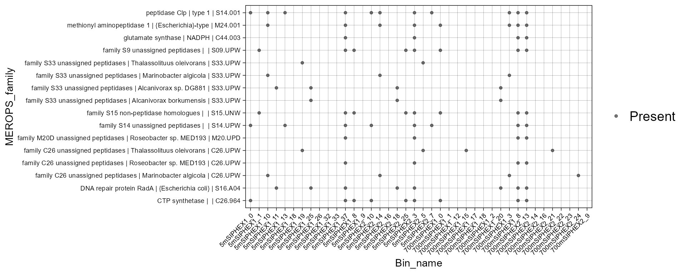
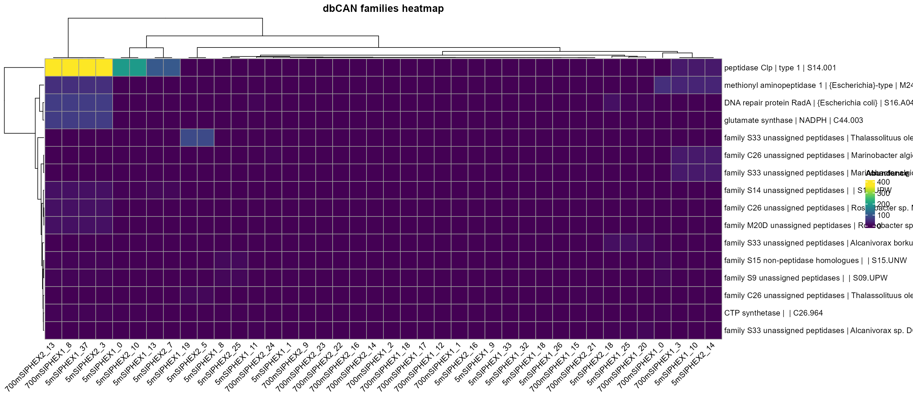

Let’s load the merops data:
merops_profile <- read_merops("../inst/extdata/peptidase_2/",
profile = T)For MEROPS the functions plot_heatmap and plot_bubble can be used as well as the other data.
Let’s choose the top 10 most abundant pathways:
library(tidyverse)
merops_profile_100 <- merops_profile %>% mutate(
avg = rowMeans(across(where(is.numeric)), na.rm = TRUE)) %>% top_n(100,avg) %>% dplyr::select(-avg)The bubble plot:
plot_bubble(merops_profile_100,
y_axis = MEROPS_family,
range_size= c(0,1.5),
x_axis= Bin_name,
analysis = "MEROPS",
calc = "Binary")
#> Scale for size is already present.
#> Adding another scale for size, which will replace the existing scale.
#> Warning: Removed 548 rows containing missing values or values outside the scale range
#> (`geom_point()`).
Now let’s group for avoiding repetitions in row.names for heatmap:
merops_profile_100_distinct <- merops_profile_100 %>% group_by(MEROPS_family) %>%
summarise(
domain_name = first(domain_name),
across(where(is.numeric), sum)
)
plot_heatmap(
merops_profile_100_distinct,
y_axis = MEROPS_family,
analysis = "MEROPS",
distance = F
)
#> Warning: The input is a data frame, convert it to the matrix.